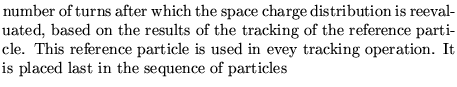
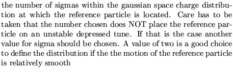
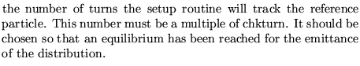
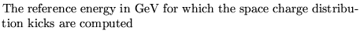
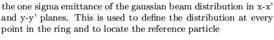
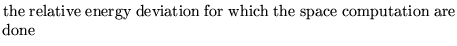

The program uses one reference particle that is situated at a user chosen sigma in the space charge distribution. At regular intervals the program checks the approximate linear motion traced by this particle.
This operation MUST ALWAYS be preceded by a MACHine operation providing the list of the twiss parameters at every point of the lattice, and by a REFErence orbit run, and a Constant definition changing the mass of the particle to that of the particle for which the space charge computation is done.
Input formatParameter definitions
SPACe charge set up.....(maximum 80 characters)
Option chkturn sigma nturn energy epsilonx epsilony delta lambda
option 
chkturn 
sigma 
nturn 
energy 
epsilonx (y) 
delta 
lambda
Examples
The example is taken from demo9. It is given together with the operations that must precede it. This operation requires caution in the interpretation of the results.
CONSTANT DEF 12 1 3 0.938259, output 0, REFERENCE 12 0.002 0.002 0 0 0 0 0 0 0, output 3, set symplectic on 1 0.5, space charge set up * new input structure 1 80 2 80 0.45 15 15 0 2.981e-8, * slightly reduced linear density to avoid error on movement analysis *1 80 2 80 0.45 15 15 0 1.000e-8, * old input structure *1 80 0.45 60 60 0 2.981e-8, *stop *1 80 0.45 60 60 0 1.0e-8, GEOM 1.661 0 14.792 0.0002 0 0 0 0 0 2 320 1 1 -1 1 1 60 60 ; stop